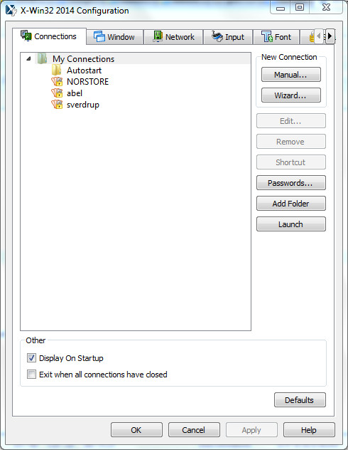
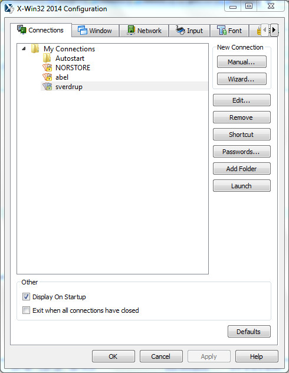

From Windows menu, start X-Win32.
Then create a new connection for sverdrup.uio.no

Create a new connection with X-Win32 on Windows
Click on "Manual..." and define a new configuration for sverdrup:

A new configuration for sverdrup
Then, click on Save (if it does not work, it is likely you'll have
to do the same operation every time you login on this machine i.e. your configuration cannot be saved)
Then to open a terminal on sverdrup, click on "Launch" (or "Test"); enter your Login and password.
Set-up your environment
For the lessons, we need to use a recent version of Fortran, having Fortran 2003 features.
To do so and for every session:
module load gcc/4.9.0
Clone the Fortran repository to get Fortran examples
git clone https://github.com/annefou/Fortran
Once you have clone the Fortran repository, you may have to update it (take new examples we built during the lectures; take bug fixes, etc.).
cd Fortran
git pull
The unix shell
If you are not familiar with any linux shell (for instance bash), please follow this
link. The first steps
should be sufficient.
Editing your source files
You need an editor (anyone) to write your source code (such as vi, emacs, gedit, etc.). You usually don't need to install a new editor yourself button
for instance if you want to edit your files from windows, you may install Notpad++.
Software Carpentry gives some good information on how to do it.
Version control with git
It is very important to keep track of your file with a version control system. It does not have to be in github or bitbucket, you can create your own
local git repository. It will help you to keep track of your changes and revert some changes if needed.
You can find several good tutorials on the web. Here is a short list on git tutorials but feel free to
use any other resources: